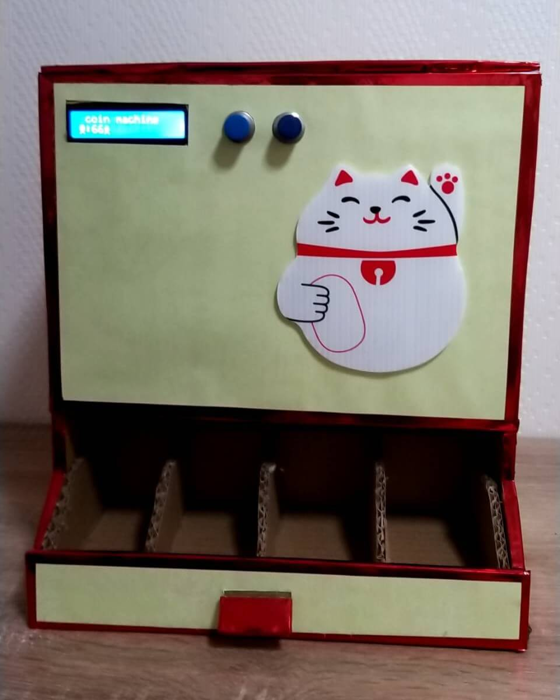

首頁
鬼滅之刃
魔術方塊
我的自動分幣機👇

正在建置
Python
資料來源
網域名稱 :
freenom
網頁加速 :
cloudflare
網站伺服 :
github page
架站教學 :
GitHub上部署自定義域名的網站|github上部署發布自己擁有頂級域名的網站
版面配置 :
名偵探柯南資訊站 Conan Center
角色介紹 :
1.鬼滅之刃角色列表
2.鬼滅之刃 Wiki | Fandom
3.萌娘百科 万物皆可萌的百科全书
一季內容 :
動漫《鬼滅之刃》1~26分集劇情大結局, 漫畫線上看故事總整理!
無限列車 :
【鬼滅之刃無限列車篇電視版】1~7集分集劇情&常見問題–卡蘿旅遊生活札記
二季內容 :
【鬼滅之刃第二季】遊郭篇分集劇情、結局，超詳細大綱!–卡蘿旅遊生活札記
魔方資料 :
1.魔方小天地
2.小丸號魔術方塊
3.一小時學盲解
底層十字 :
【被忽略的底层十字公式!完整】CFOP教學 KaNanTV | CROSS底层十字
魔方動畫 :
larspetrus/Roofpig: Rubik's Cube animation for the modern web.
社群媒體
觀光人數